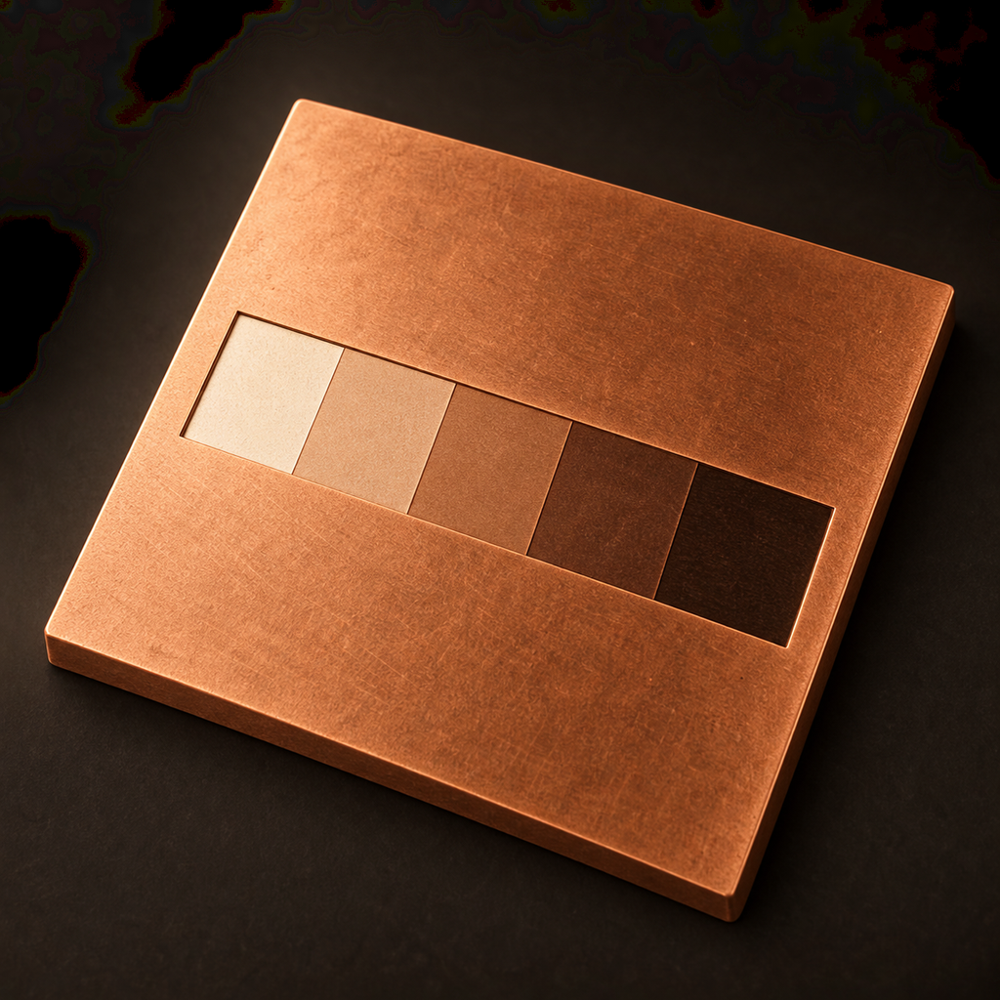

01
Calibrate from a real test
Enter your tested time and observed and target steps. Photopolymer calculates a next test for a nominal half-stop, 21-step wedge, with the method and its limits close at hand.

PhotopolymerA measured approach to printmaking
Turn a wedge test into your next exposure, keep the setup that worked, and follow each stage at your own pace.
For iPhone and iPad · iOS 17 or later · English, French and Spanish
01
Enter your tested time and observed and target steps. Photopolymer calculates a next test for a nominal half-stop, 21-step wedge, with the method and its limits close at hand.
02
Save plate, exposure unit, measured stage times and notes. Search, edit, duplicate or share a recipe as plain text. Aquatint time stays your own measured value.
03
Start, pause, resume and extend a stage. The next stage waits for you. Optional local alerts follow your notification settings; completed runs keep a snapshot of the recipe.
La mesure au service de la gravure
Passez d’un essai à la prochaine exposition, conservez les réglages qui fonctionnent et suivez chaque étape à votre rythme.
Pour iPhone et iPad · iOS 17 ou ultérieur · Français, anglais et espagnol
01
Saisissez le temps testé, l’échelon observé et l’échelon visé. Photopolymer calcule un prochain essai pour une gamme nominale de 21 échelons par demi-diaphragme, avec la méthode et ses limites à portée de main.
02
Enregistrez la plaque, l’unité d’exposition, les temps mesurés et vos notes. Recherchez, modifiez, dupliquez ou partagez une recette en texte. Le temps d’aquatinte reste votre propre mesure.
03
Démarrez, mettez en pause, reprenez ou prolongez une étape. La suivante attend votre action. Les alertes locales facultatives suivent vos réglages de notifications ; les séances terminées conservent un instantané de la recette.
La medida al servicio del grabado
Pasa de una prueba a la siguiente exposición, guarda los ajustes que funcionan y sigue cada etapa a tu ritmo.
Para iPhone y iPad · iOS 17 o posterior · Español, inglés y francés
01
Introduce el tiempo probado y los pasos observado y deseado. Photopolymer calcula la siguiente prueba para una escala nominal de 21 pasos de medio diafragma, con el método y sus límites siempre a mano.
02
Guarda la plancha, la unidad de exposición, los tiempos medidos y tus notas. Busca, edita, duplica o comparte una receta como texto. El tiempo de aguatinta sigue siendo tu propia medida.
03
Inicia, pausa, reanuda o prolonga una etapa. La siguiente espera tu acción. Las alertas locales opcionales siguen tus ajustes de notificaciones; las sesiones completadas conservan una copia de la receta.